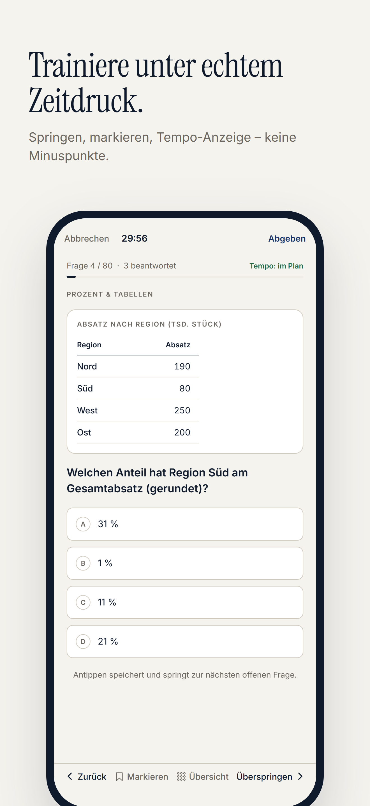
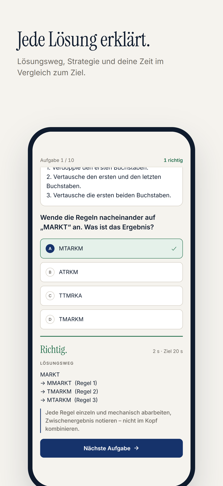
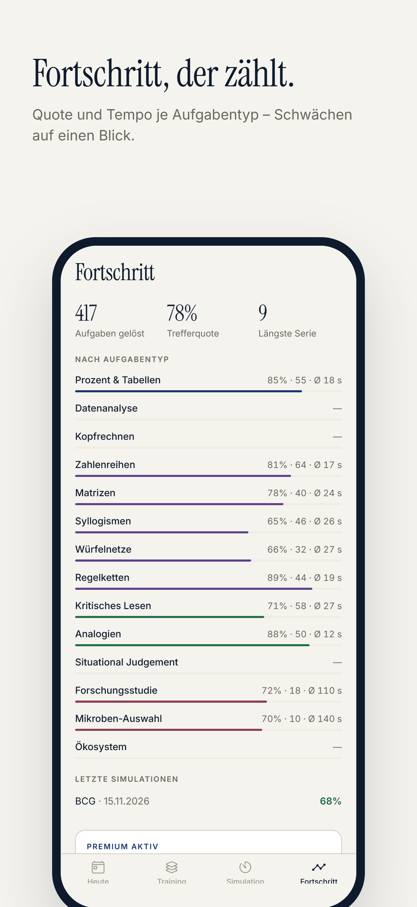

Bestehe den Online-Test deiner Wunschberatung.
Alle Aufgabentypen der Consulting-Assessments, ein Lösungsweg zu jeder Aufgabe und Simulationen unter echtem Zeitdruck.
Bald im App StoreKostenlos starten · 5 Aufgaben pro Typ und Tag · eine Simulation gratis

80 Fragen. 30 Minuten.
Keine Minuspunkte.
Wer alle Fragen lösen will, verliert. Entscheidend ist, die Zahl richtiger Antworten zu maximieren – und keine Frage leer zu lassen. Die Simulation trainiert genau diese Strategie.
| 0–10 Min. | Erster Durchgang. Sofort lösen, was unter 15 Sekunden dauert, alles andere überspringen. |
| 10–20 Min. | Alle 80 Fragen einmal gesehen, 45–55 sicher beantwortet. |
| 20–27 Min. | Zweiter Durchgang über die übersprungenen, mittelschweren Fragen. |
| 27–30 Min. | Blind-Sweep: Jede offene Frage bekommt eine Antwort. |
Alles, was im Test drankommt.
Zahlen
Prozent- und Tabellenaufgaben, Datenanalyse mit Diagrammen, Kopfrechnen.
Logik
Zahlenreihen, Matrizen, Syllogismen, Würfelnetze und Regelketten.
Sprache & Urteil
Kritisches Lesen (wahr / falsch / unbestimmbar), Analogien, Situational Judgement.
Spielbasiert
Forschungsstudie, Optimierung unter Nebenbedingungen und Ökosystem – für das Solve-Format.
Lösungswege
Zu jeder Aufgabe: Rechenweg, Strategie und deine Zeit im Vergleich zum Zielwert.
Fehlertraining
Falsch gelöste Aufgaben kommen wieder, bis sie sitzen.


